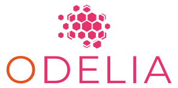

Funding
We are currently funded by the German Research Foundation (DFG), the Federal Ministry of Education and Research and the European Union.
ODELIA - Open Source Swarm Learning to Empower Medical AI
ODELIA is a unique and groundbreaking project that harnesses the power of swarm learning to revolutionize medical AI in a privacy-preserving and democratic way. With the first open source pan-European swarm learning network, we aim to develop and validate AI algorithms for breast cancer detection in MRI screening examinations, and paving the way for numerous other clinical applications.
To ensure the project's success and deliver its transformative results, ODELIA is structured into eight distinct work packages, each focusing on specific tasks and objectives. These work packages cover everything from creating a minimum viable product to addressing regulatory frameworks and fostering communication among stakeholders. By breaking down the project into manageable components, ODELIA is poised to make a lasting impact on the medical AI landscape and improve healthcare outcomes for patients across Europe.
Facts and figures
Coordinator: European Instititute for Biomedical Imaging Research
(EIBIR)
Number of Partners: 12
Start Date: January 1, 2023
End Date: December 31, 2027
Total Funding: around € 8,691,755.00
This project has received funding from the European Union`s Horizon
Europe research and innovation programme under grant agreement No.
101057091.
Transform Liver - Scaling up Vision Transformers for Biomarkers in Liver Disease
Liver diseases are widespread in Germany and Europe and are an increasingly important cause of sickness and mortality. Computer-aided assistance systems can use artificial intelligence (AI) to contribute to early detection and therapy decisions in liver diseases, for example by processing image and tabular data.
In this project, the partners are developing Vision Transformer (ViT, a deep learning architecture), the latest and most powerful type of artificial neural network, specifically for the diagnosis and risk prediction of liver disease. They are building on results from non-medical fields that have not yet been applied to medical research. For the first time, the researchers are enabling the systematic use of the new transformer technology for medical issues.
The consortium has a large collection of image data and associated patient data such as age, gender and comorbidities. This data will be used to train new AI models (transformers). The goal is to generate new biomarkers to predict disease progression and provide information for personalised patient treatment. These biomarkers are expected to outperform classical approaches based on conventional neural networks. In addition, TRANSFORM LIVER will provide a better understanding of disease processes in the liver, in particular cellular interactions, by applying explanatory approaches to trained transformers.
Facts and figures
Coordinator: TU Dresden
Number of Partners: 3
Start Date: March 1, 2023
End Date: February, 28, 2026
Total Funding: € 491.788,80
This project has received funding from the Federal Ministry of
Education and Research under grant agreement No. 100582595.